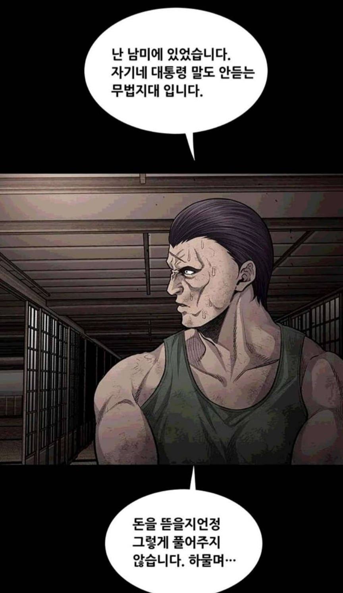
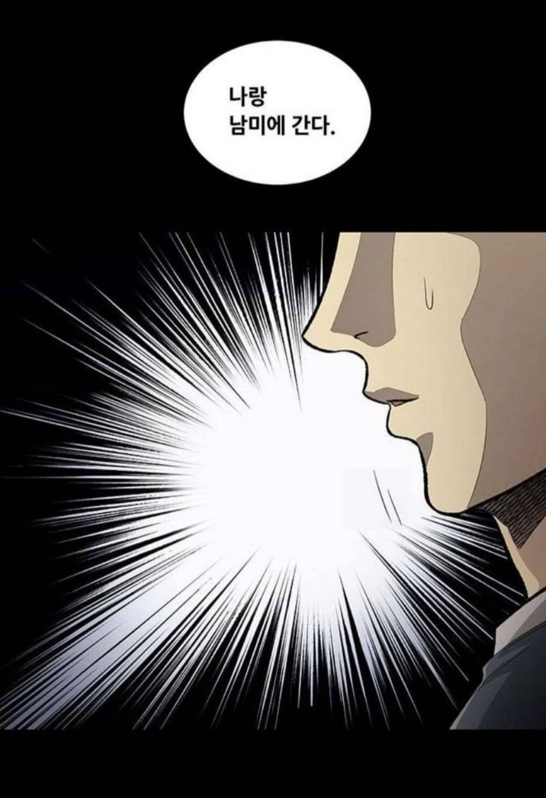
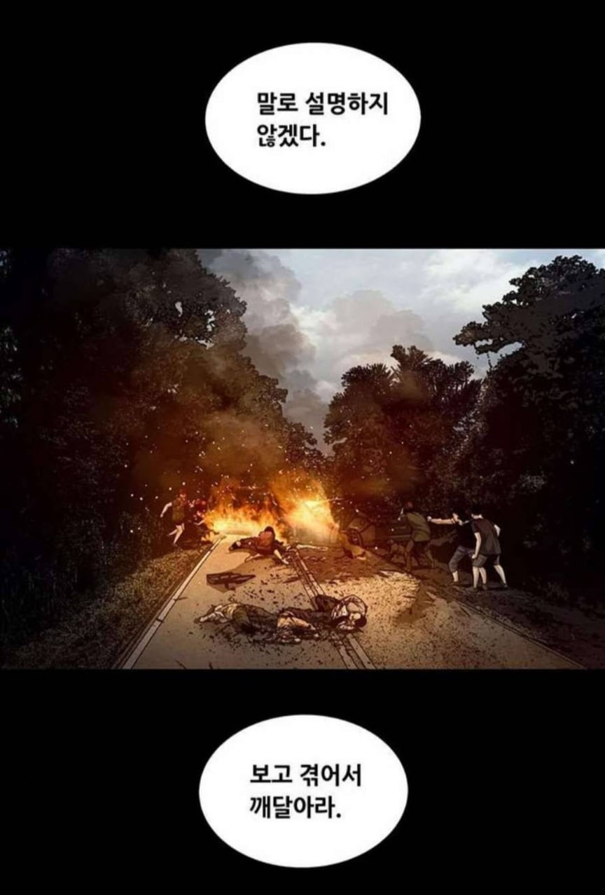
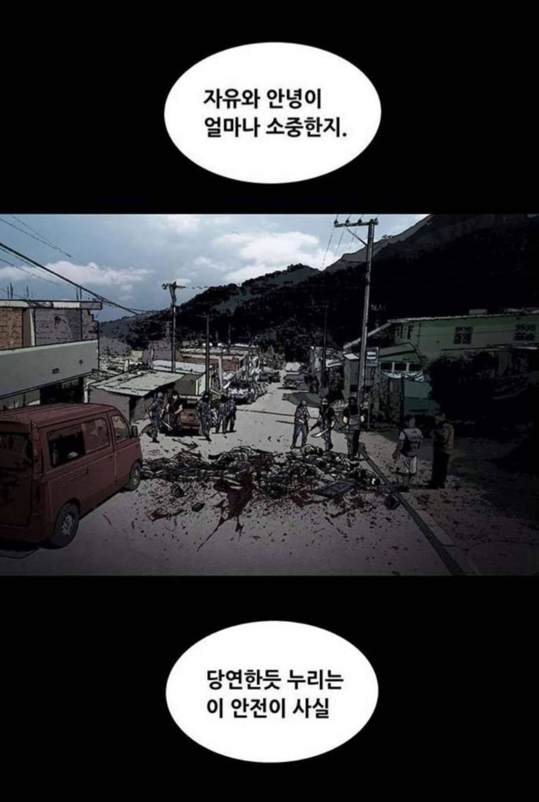
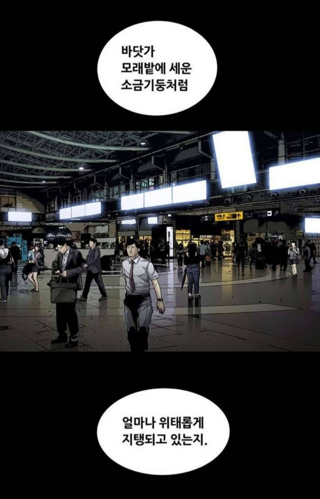
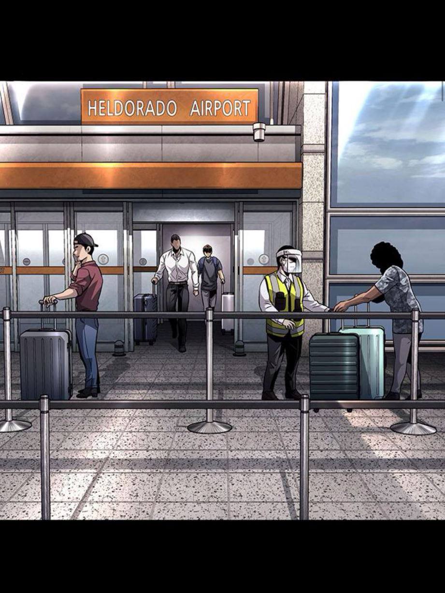
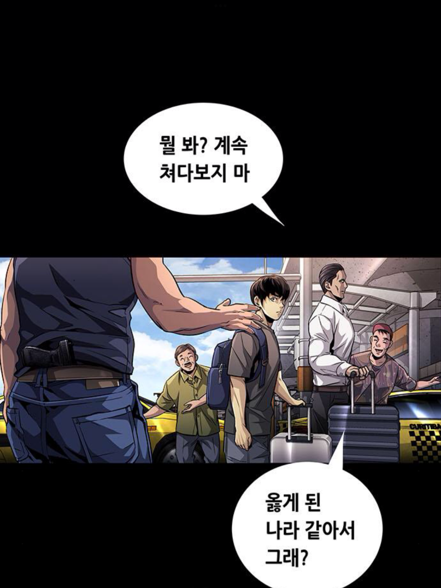
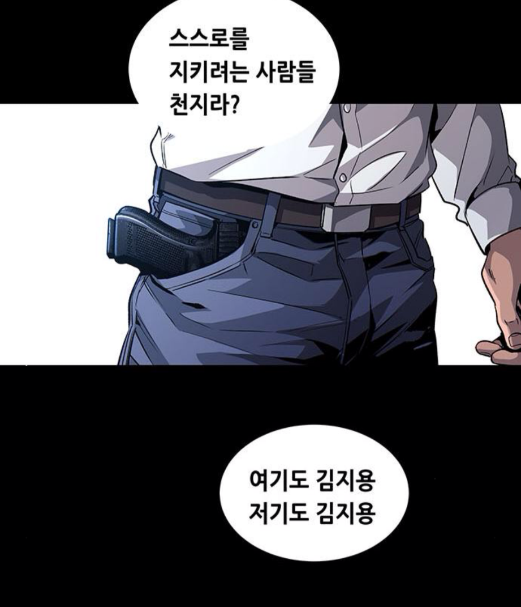
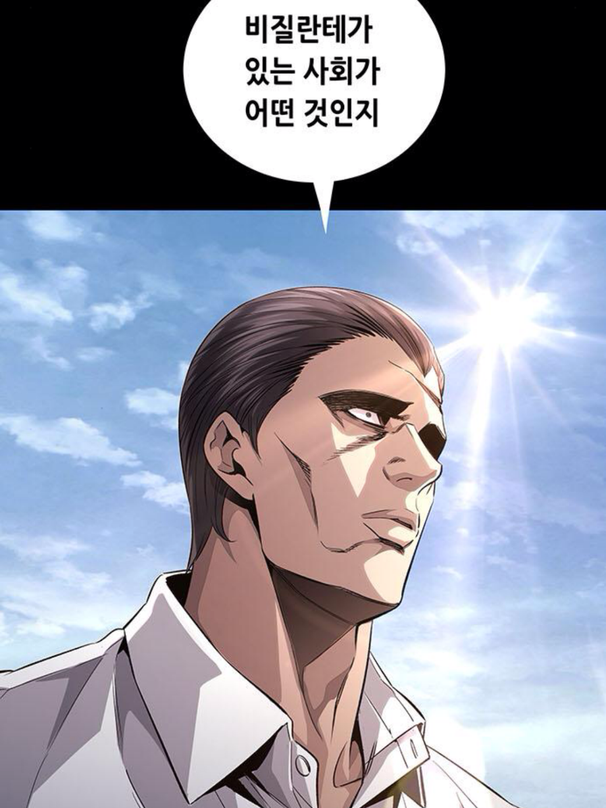

웹툰 이름은 비질란테









웹툰 이름은 비질란테
비질란테 시즌2 임?
시즌1 엔딩일걸? 조현이 계속 데리고 갈려고 했으니
나 엔딩 본줄 알았는데 아니었나보네
마지막 에필로그 무료이용권으로 ㄱ
마지막 남미 오는 장면과 함께 여기도 김지용 저기도 김지용 이러는 건 시즌 2 장면 맞음. 시즌 2에서 김지용이 남미에서의 일을 회상하면서 나옴.
시즌 1 엔딩에선 남미로 가자는 말만 나오고, 남미씬 통째로 생략됐음.
위의 건 시즌 1이고 밑의 건 시즌 2임. 시즌 1에선 남미씬 통째로 생략됐고, 시즌 2에서 회상으로 나옴.
뒤질란테
남미 카르텔 중에서 카르텔에게 대항하기 위해 자경대를 만들어 자기네들도 카르텔이 된게 있다던데
라 파밀리아 미초아카나
아마 이거
에스코바르에게 대항하려고 생신 로스 페페스 라는 콜롬비아 카르텔도 비슷한 케이스
로스 포요스 에르마노스~
로스 포요스 에르마노스~
아보카도 농부들 ㅋㅋㅋㅋ
ㅇㅇ 맞음. 지금은 그 카르텔 다음 세대임
해보니까 좋더라 -> 자경대에 맞서는 자경대 구성 -> 해보니까 좋더라 무한반복중임 ㅅㅂ ㅋㅋㅋㅋㅋ
한류스타 Q3
브라질 경찰들이랑 교류한 적 있는데 정말 따지고 들면 우리나라는 세계에서 손에 꼽을 정도로 온실에 가까움...
새벽2시에 편의점에 슬리퍼신고갈수있는나라
페미들 보내야함 진짜
왜 페미니스트들은 그렇게 여성인권 꼴등이라는 한국에서 쳐 안꺼지는걸까
여성 시민단체 통계순위에서 중동국가보다 밑에 한국놓은거보고 '이생퀴들은 지들이 하는짓마다 모순이 있다는걸 부끄러워하질 않는구나' 싶었음
ㄹㅇ 후진국 은행가면 경비들 샷건이나 ak들고있음 ㅋㅋ
그 온실이 성립하는게 반대로 정부와 정규군 힘이 존나 쎄서 가능한거임.
저긴 24시간 퍼지데이임
캐릭터 와꾸봐라 사람도 그냥 죽이겠네
정보) 맞다
파워+스피드 / 타격+레슬링 all max
키 얼추 2미터 언저리
몽둥이 들면 혼자서도
열명 넘는 조폭도 겸손하게 만드는 전투력 있음
진짜 Q3는 체력이 약한게 문제인듯.
후반부로 가면 지쳐서 이야기를 집어던지는게 눈에 보임..
하이브나 비질란테 2부는 그렇게 끝낼바엔 차라리 휴재를 하라고 ㅋㅋ
넌 비범하다 ! 우린 비범하다!
아닙니다 모순입니다 !
아직 모르겠느냐 나도 자경단을 해봤기에 깨달았다! 우린 비범하다 !
아닙니다 궤변입니다 !
한 20화 이렇게 무한 반복하다가
급작스레 정치인 되었다 엔딩 보고 얼탐 ㅋㅋ
비범인 운운하는거 죄와 벌 같아서 규삼이햄 이번에 칼 제대로 갈았네 했는데 ㅋㅋㅋㅋㅋㅋㅋ 존나 용두사미임
2부 최종보스 사상과 합리성을 반박할 말을 작가 본인도 모르겠으니 계속 주인공과의 설전만 지루하게 늘어지기만 한 거지. 결국 최종보스의 사상을 논리적으로 꺾지 못 하고, 주인공이 직접 행동으로 보여주겠다며 자수 + 정치인 도전 엔딩으로 후지부지 끝남. 사실상 답을 3부로 미룬 셈인데, 허탈하더라.
ㄴㄴ 최종보스의 사상과 합리성은 허접했음 이상과 의도는 좋았으나 수단과 방법이 잘못된 케이스임
범죄 카르텔화 되기 딱 좋은 방식이고 신성철이 정치인이라 리스크가 존나 큼
그 다음으로 문제인게 김지용 다음에 올 인재들이 꾸준히 존재할 수 있는가?인거지
Q3은 시즌2 금지시켜야됨 잘 끝낸걸 굳이 꺼내고 던져
시즌2도 결말전까진 재밌었긴함..
세계 치안 4위가 개좆인줄 아는애들이 너무 많음 ㅋㅋㅋ
남미에서 강간은 범죄 축에도 못낌
심심하면 살인 마약터지는데
이 나라는 강간이 살인보다 더 심각한 범죄인줄 아는 새끼들이 살고있음ㅋㅋㅋㅋㅋ
심지어 국가적으로도 그걸 밀고있다노 ㅋㅋ
1위는 어디야?
한남때문에 한국에서 살기가 두렵다고 하면
외국까지 갈 필요도 없이 대림에서 딱 하루만 버텨보라고 하고 싶음
한국이 얼마나 좋은지 알려면 보룡인들 대림에 고립시켜야된다는거에 동의함
거기 가보면 공권력이 미치지 않는 곳은 어떤 느낌인지 간접적으로 알 수 있으니
거기서 한발 더 나갈려면 귤보디아
공권력이 범죄에 붙어먹는 나라는 어떤곳인지 간접체험 가능
대림 가본적 잇냐..? 뭔 공권력 없어진 ㄹㅇ 말도 안되는 칼찌도시로 아나.. 여기도 서울임..
남매에 대한 묘사 어디감
개장수아저씨아냐?
남미는 대륙아닌가
분명 제목이 남미새였는데
남미도 브라질 아래부터는 그래도 사람 살만한 수준이라드만
브라질 위쪽 미국행 마약 루트에 껴있는 나라들이 저 지경들이고
그 뭐냐 하이브? 웹툰이랑 그림체 같네
벌인가 나와서 지구점령하는 아포칼립스물이였나
재밌게 봤엇는데 완걀낫나?
남미씬은 사적제재로 범죄자 응징하는 비질란테, 다크 히어로를 왜 용인해선 안 되는지 잘 풀어낸 장면이라고 봄. 조헌이 왜 그토록 비질란테를 혐오했는지도 잘 설명되었고.
애초에 전부터 모방범, 사칭범 등 여러 부작용이 터져 나오며, 비질란테의 존재는 오히려 사회를 어지럽히고 있다는 걸 강조했음.
비질게
해외연수도 가네